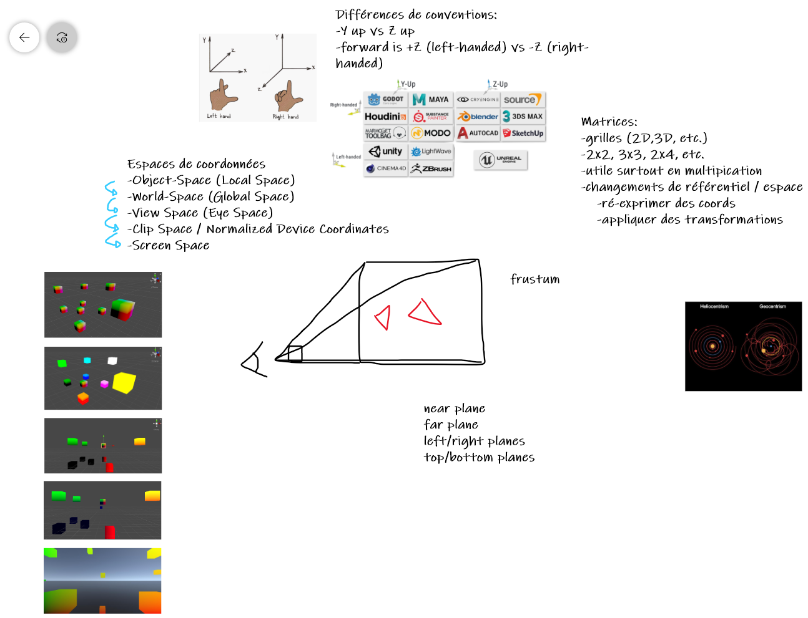
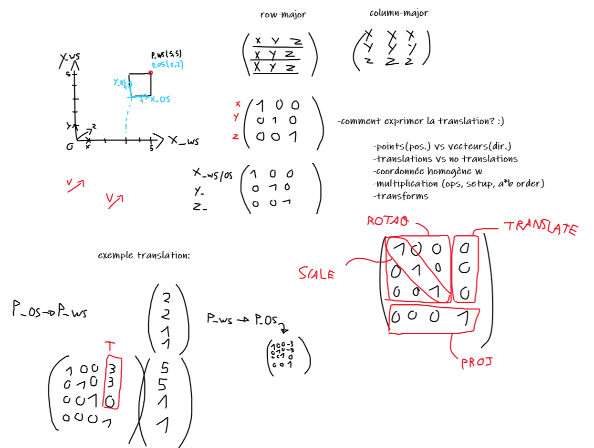
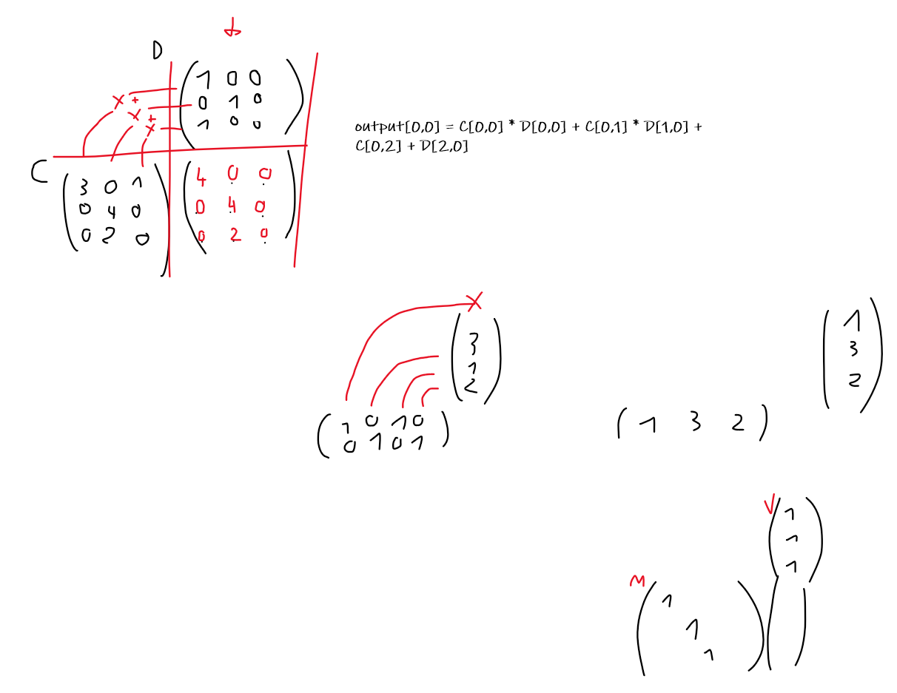

Render Pipeline
Les étapes principales de rendu sont:
1) Description de scène / Vertex Data
2) (Gestion de topologie - Hull shaders / Domain shaders / Geometry shaders)
3) Vertex Shading + Projection
4) Rasterization
5) Fragment Shading
6) Merging
Vertex Data (en object space)
-positions
-normals
-tangents
-UVs
-vertex color
-...
Vertex Shading
-Projection
Object space -> World space -> View space -> Clip space
Rasterization
-Clip space -> Screen space
-interpolation barycentrique de propriétés de vertices pour chaque fragment de la surface d'un triangle
Fragment shading
-Couleur
-Textures
-Lumière
-Transparence
-Textures
-Type de shader (Opaque, Opaque avec AlphaClip, Transparent)
-Type de blending (Alpha blend, Additif, Multiplication, ...)
-Propriétés PBR
-Smoothness/Roughness
-Metalness
-Emission
...
Merging
combinaison des fragments pour obtenir la couleur finale des pixels
B2
b
b
b
  